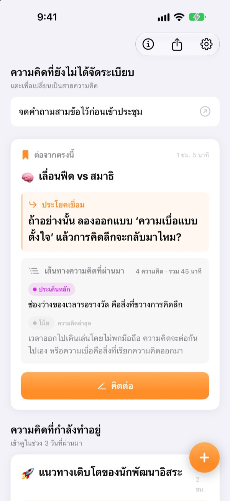
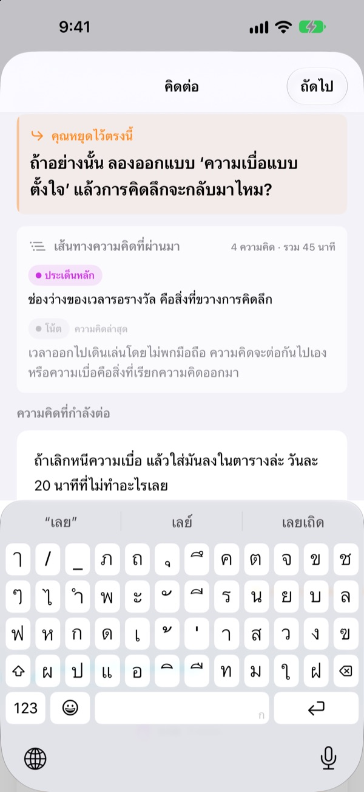
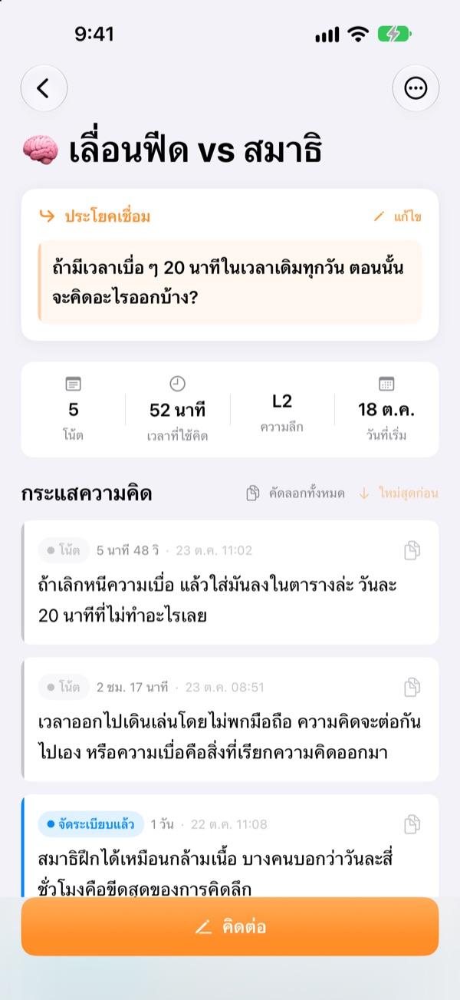
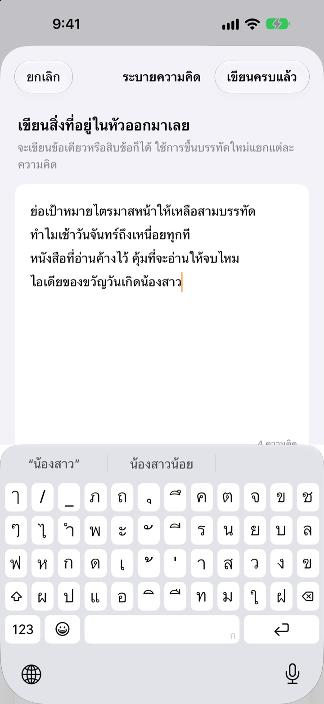

ความคิดที่ค้างไว้เมื่อวาน
วันนี้คิดต่อจากจุดเดิม
ตอนหยุดคิด ให้ทิ้งไว้หนึ่งบรรทัดสำหรับคิดต่อ ครั้งหน้าที่เปิดแอป บรรทัดนั้นจะรออยู่บนสุด
ใช้ได้ทุกฟีเจอร์ฟรี ไม่ต้องมีบัญชี ทุกอย่างอยู่ในอุปกรณ์ของคุณ

ลองทิ้งประโยคเชื่อม
เขียนความคิดหนึ่งบรรทัด แล้วทิ้งประโยคที่จะคิดต่อในครั้งหน้า ขั้นตอนเหมือนในแอปทุกอย่าง
เมื่อกี้คิดถึงไหนแล้วนะ
เปิดโน้ตเมื่อไม่กี่วันก่อนขึ้นมา เจอแค่ข้อสรุปไม่กี่บรรทัด แต่คำถามที่ตั้งใจจะคิดต่อหายไปแล้ว สุดท้ายก็ต้องเริ่มคิดใหม่ตั้งแต่ต้น ThinkFlow ให้คุณทิ้งคำถามถัดไปไว้ตอนหยุด พอกลับมาเปิดก็เริ่มจากคำถามนั้นได้เลย
ประโยคเชื่อมรออยู่บนสุด
ตอนจบการคิด ให้ทิ้งไว้หนึ่งบรรทัด คือคำถามที่จะคิดต่อ เมื่อกลับมา ประโยคนั้น ประเด็นหลักที่ผ่านมา และความคิดล่าสุดจะอยู่ในการ์ดใบเดียว ไม่ต้องนึกย้อนว่าคิดถึงไหนแล้ว
ประโยคเชื่อมยังแสดงในวิดเจ็ตบนหน้าจอโฮม และระหว่างที่คิด เวลาจะแสดงบนหน้าจอล็อกและ Dynamic Island

จากโน้ตสู่ประเด็นหลัก
ยกระดับแต่ละความคิดผ่านสี่ระดับ คือโน้ต จัดระเบียบ ประเด็นหลัก และสรุป ดูได้ในพริบตาว่าความคิดตกผลึกไปถึงไหน
สิ่งที่ค้นหาหรือถามมาจะแนบเป็นข้อมูลอ้างอิง แยกจากความคิดของคุณเอง

เริ่มจากระบายให้หัวโล่ง
เขียนทุกอย่างที่อยู่ในหัวออกมา บรรทัดละเรื่อง แล้วเลือกเรื่องที่อยากคิดตอนนี้ เรื่องนั้นจะกลายเป็นเธรดความคิด ที่เหลือรออยู่ในหน้าแรกจนกว่าคุณจะแตะ
ความคิดที่ไม่ได้แตะเกินสามวันจะไปรวมอยู่ใน ความคิดที่ควรฟื้นคืน

เริ่มได้ในสามขั้นตอน
- 1
ระบายความคิด
เขียนบรรทัดละเรื่อง แล้วเลือกเรื่องที่อยากต่อยอด
- 2
คิดต่อ
เพิ่มความคิดใหม่แยกกันทีละเรื่อง จะได้กลั่นกรองง่ายในภายหลัง
- 3
ทิ้งประโยคแล้วปิด
ครั้งหน้าก็เริ่มจากประโยคนั้นได้เลย
ระดับการกลั่นกรอง
- โน้ต
- ความคิดดิบ
- จัดระเบียบแล้ว
- จัดระเบียบหนึ่งรอบ
- ประเด็นหลัก
- เฉพาะประเด็นหลัก
- สรุป
- สรุปสุดท้าย
แตะป้ายระดับข้างความคิดเพื่อเปลี่ยน ประเด็นหลักและสรุปจะแสดงในการ์ดก่อนเมื่อคุณกลับมา
ประโยคเชื่อมรออยู่บนสุด
ต้องเขียนประโยคเชื่อมทุกครั้งไหม
ถ้าเพิ่มอะไรไปแล้วก็ต้องเขียน หน้าจอคิดต่อจะปิดได้เมื่อทิ้งประโยคถัดไปไว้แล้ว ถ้ายังไม่ได้เขียนอะไรก็ปิดได้เลย เคล็ดลับคือหยุดตอนที่ยังมีเรื่องจะเขียน ไม่ใช่ตอนที่ติด
ความคิดที่ควรฟื้นคืนคืออะไร
เธรดที่ไม่ได้เปิดเกินสามวันจะถูกรวมไว้ต่างหากในหน้าแรก ความคิดที่เกือบลืมไปแล้วก็คิดต่อจากประโยคเชื่อมได้
อยากแจ้งปัญหาหรือเสนอฟีเจอร์
ใช้ ส่งความคิดเห็น ในการตั้งค่าของแอป เขียนอีเมลไปที่อยู่ด้านล่าง หรือเปิด issue ที่ github.com/M1zz/ThinkFlow/issues ยินดีรับฟังทุกเรื่อง
ใช้ฟรีทั้งหมดจริงไหม
จริง ทุกฟีเจอร์ใช้ได้ฟรี ไม่มีโฆษณาและไม่ต้องสมัครบัญชี ส่วน “สนับสนุนผู้พัฒนา” ในการตั้งค่าจะทำหรือไม่ก็ได้ และไม่ได้ปลดล็อกอะไรเพิ่ม
มีคำถามหรือข้อเสนอแนะ เขียนมาที่ leeo@kakao.com